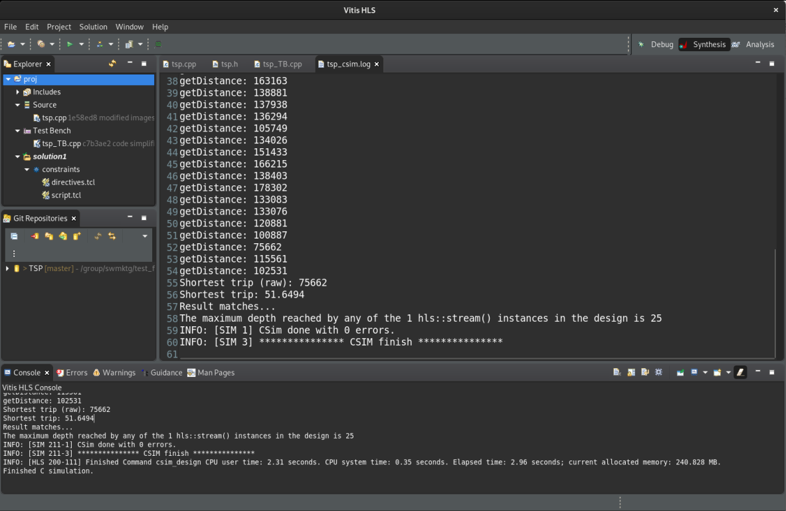

In this section…
Executingmainto functionaly verify thetspfunction.
2021.1 Vitis™ - The Traveling Salesperson Problem - TutorialSee Vitis™ Development Environment on xilinx.com |
Run the Vitis HLS C Simulation¶
As discussed, the testbench file is visible on the left hand side of the Vitis HLS GUI, from the Explorer pane: proj->TestBench with the file tsp_TB.cpp.
Inside the tesbench we see that city coordinates are converted to distances.
City coordinates:
const Coord cities[] = {{40.7127837, -74.0059413 },
{34.0522342, -118.2436849},
{41.8781136, -87.6297982 },
{29.7604267, -95.3698028 },
...
Calculation for distances (as previously discussed, these numbers are normalized to integers before feeding them into the tsp accelerator function):
float dist = std::sqrt(
std::pow(cities[i].x-cities[j].x, 2)
+ std::pow(cities[i].y-cities[j].y, 2)
);
The testbench sends 16-bit (uint16_t) data types transcoded from floating-point for efficient hardware processing:
// Normalizing distances to get the maximum precision on 16-bit integers
uint16_t maxUint = std::numeric_limits<uint16_t>::max();
for ( int i = 0; i < N*N; ++i ) {
cout << "Distance (fp32): " << distances[i] << " Norm. (uint16): " << (uint16_t)((distances[i]/maxDist) * maxUint);
inputDistances.write((distances[i]/maxDist) * maxUint);
}
Before running the simulation open the tsp.h file and examine the number of cities (N=5). To begin with you will use only a few cities to allow simulation to complete quickly. In the next lab you will set the number of cities to 13 for synthesis. You can open the tsp.h file in the Vitis HLS GUI from the tsp.cpp file by holding the mouse over the #include "tsp.h" line and press CTRL key while clicking the mouse.
IMPORTANT: Reducing the value of N for simulation is important, or your simulations will take considerable time to run
To run the simulation from the Vitis HLS GUI, point to the upper toolbar of the Vitis HLS GUI, locate the green ‘play’ icon and from its drop-down menu, select C simulation:
You can also alternatively use the main menu: Project -> Run C Simulation
Once the C simulation dialog comes up, simple click OK.
After the C simulation, the Vitis HLS GUI will look like this:

As we see on the screenshot above, the result is 75662 (scaled integer) or 51.6494. It matches the pre-computed result stored in the testbench.